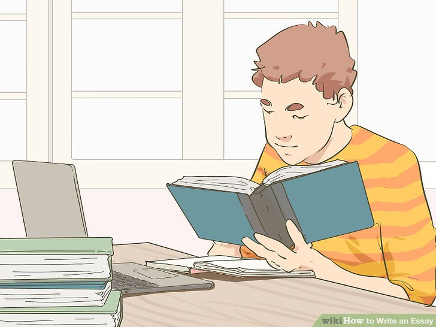
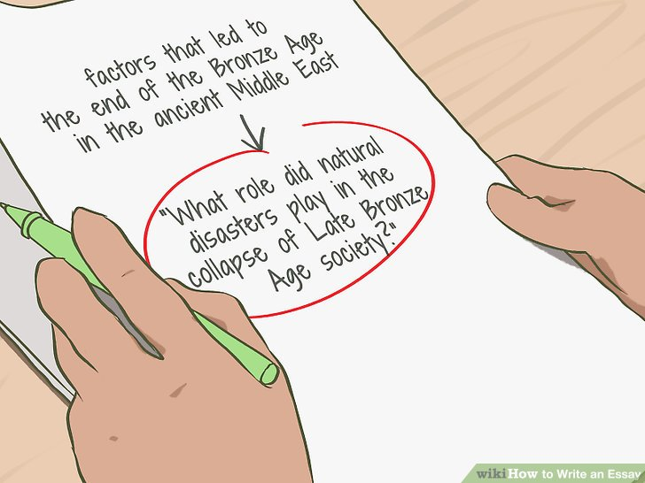
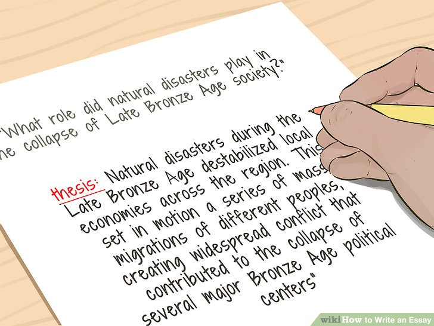
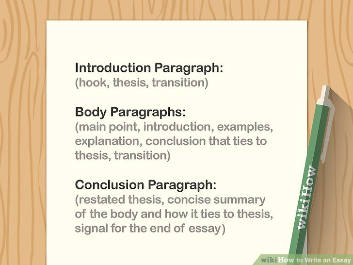

How to write an essay
How to Write An Essay :
An essay is a common type of academic writing that you'll likely be asked to do in multiple classes. Before you start writing your essay, make sure you understand the details of the assignment so that you know how to approach the essay and what your focus should be. Once you've chosen a topic, do some research and narrow down the main argument(s) you'd like to make. From there, you'll need to write an outline and flesh out your essay, which should consist of an introduction, body, and conclusion. After your essay is drafted, spend some time revising it to ensure your writing is as strong as possible.

1.
Find some reputable sources on your topic.
If you're writing an academic essay or any type of essay that requires you to support your claims with evidence and examples, you'll probably need to do some research. Head to your library or go online to find up-to-date sources that provide accurate, verifiable information about your topic.
Academic books and journals tend to be good sources of information. In addition to print sources, you may be able to find reliable information in scholarly databases such as JSTOR and Google Scholar.
You can also look for primary source documents, such as letters, eyewitness accounts, and photographs.
Always evaluate your sources critically. Even research papers by reputable academics can contain hidden biases, outdated information, and simple errors or faulty logic.

2.
Make notes as you do your research.
As you're researching your topic, keep detailed notes about relevant information, ideas that interest you, and questions that you need to explore further. If you plan to use any of the information that you find in your paper, write down detailed citation information. This will allow you to find the information again and cite it properly.
You might find it helpful to write your notes down on individual note cards or enter them into a text document on your computer so you can easily copy, paste, and rearrange them however you like.
Try organizing your notes into different categories so you can identify specific ideas you'd like to focus on. For example, if you're analyzing a short story, you might put all your notes on a particular theme or character together.

3.
Choose a question to answer or an issue to address.
As you do your research, you will likely find yourself narrowing your focus even further. For example, you might discover that there is a particular question you want to answer, or that there's a popular argument or theory about your topic that you'd like to try to disprove. This question or issue will form the basis for your thesis, or main argument.
For example, if your essay is about the factors that led to the end of the Bronze Age in the ancient Middle East, you might focus on the question, “What role did natural disasters play in the collapse of Late Bronze Age society?”

4.
Create a thesis statement that summarizes your main argument.
Once you've hit on a specific question or idea you'd like to address in your essay, look at your research and think about the major point or argument you'd like to make. Try to summarize your main point concisely, in 1-2 sentences. This will be your thesis statement.
One easy way to come up with a thesis statement is to briefly answer the main question you would like to address.
For example, if the question is “What role did natural disasters play in the collapse of Late Bronze Age society?” then your thesis might be, “Natural disasters during the Late Bronze Age destabilized local economies across the region. This set in motion a series of mass migrations of different peoples, creating widespread conflict that contributed to the collapse of several major Bronze Age political centers.”

5
Write an outline to help organize your main points.
After you've created a clear thesis, briefly list the major points you will be making in your essay. You don't need to include a lot of detail—just write 1-2 sentences, or even a few words, outlining what each point or argument will be. Include sub-points addressing the evidence and examples you'll be using to back up each point.
When you write the outline, think about how you would like to organize your essay. For example, you might start with your strongest arguments and then move to the weakest ones. Or, you could begin with a general overview of the source you're analyzing and then move on to addressing the major themes, tone, and style of the work.
Your outline might look like this:
Introduction
Body
Point 1, with supporting examples
Point 2, with supporting examples
Point 3, with supporting examples
Major counter-argument(s) to your thesis
Your rebuttals to the counter-argument(s)
Conclusion